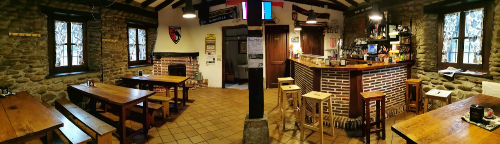

Plater Konbinatuak
Oilasko bularrak, xerrak, sekretu iberikoa, kaxopoa eta askoz gehiago.
Ohitura, zapore eta giro paregabea Arrankudiagaren bihotzean.
Gozatu gure plater konbinatu, ogitarteko, hanburgesa, errazio eta aldez aurretik eskatzeko espezialitateekin.
Desde hace años ofrecemos cocina tradicional, productos de calidad y un ambiente familiar donde compartir buenos momentos.
Nuestra especialidad son los platos combinados, los bocadillos elaborados al momento y nuestras opciones para grupos.

Oilasko bularrak, xerrak, sekretu iberikoa, kaxopoa eta askoz gehiago.
Osagai freskoekin eta zapore bereziekin prestatuak.
Paellak, bakailaoa, babarrunak eta beste hainbat aukera aldez aurretik eskatuta.
"Taldean bazkaltzeko edo afaltzeko leku ezin hobea. Plater konbinatuak eta errazioak oso ugariak dira. Langileen arreta bikaina da."
"Inguruko hanburgesa onenak. Haragia kalitatezkoa dela igartzen da. Gainera, tabernako giroa izugarria da."
"Oso lokal atsegina Arrankudiagan. Pikatzeko afaltzera joan ginen eta txopitoak zein bokatak izugarri gustatu zitzaizkigun. Zalantzarik gabe, itzuliko gara."
"Zerbitzu azkar eta eraginkorra. Prezio oso arrazoizkoak janariaren kalitateagatik. Eskaera bidezko paella gomendatzen dut."
"Betiko taberna bat baina eskaintza gastronomiko oso onarekin. Errazioak partekatzeko perfektuak dira."
"Katxopoa izugarria da eta primeran dago. Arrankudiagan ondo jan eta aseta atera nahi baduzu, leku aproposa da hau."